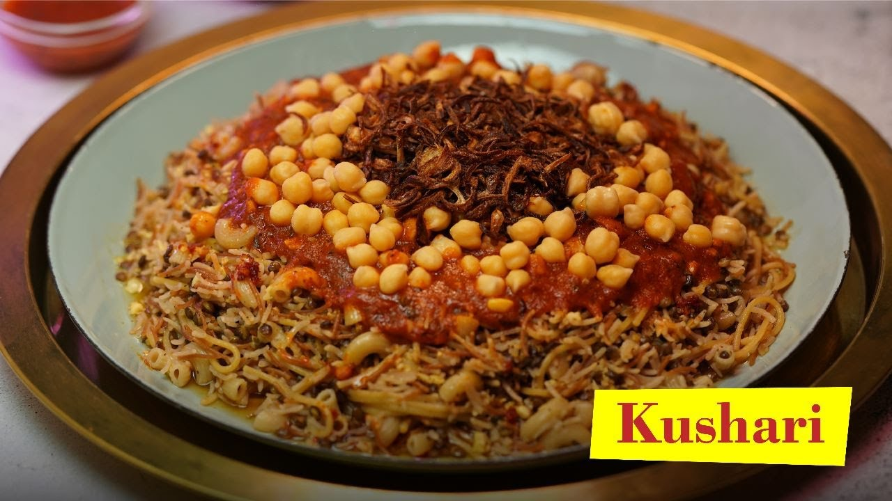
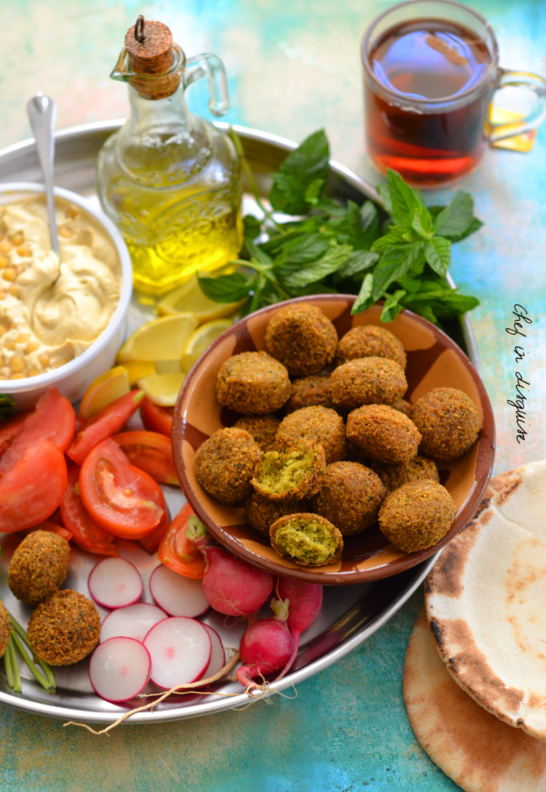

My Favourite foods in Egypt
Kushari
Koshary, kushari or koshari (Egyptian Arabic: كشرى [ˈkoʃæɾi]) is Egypt's national dish and a widely popular street food.[1] It is a traditional Egyptian staple, mixing pasta, Egyptian fried rice, vermicelli and brown lentils,[2][3] and topped with chickpeas, a garlicky tomato sauce, garlic vinegar, and crispy fried onions. Sprinklings of garlic vinegar and hot sauce are optional and sometimes liver.
foul e taamia
Ful medames (Egyptian Arabic: فول مدمس, romanized: fūl midammis IPA: [fuːl meˈdammes]; other spellings include ful mudammas and foule mudammes, in Coptic: ⲫⲉⲗ phel or fel), or simply fūl, is a stew of cooked fava beans served with olive oil, cumin, and optionally with chopped parsley, garlic, onion, lemon juice, chili pepper and other vegetables
